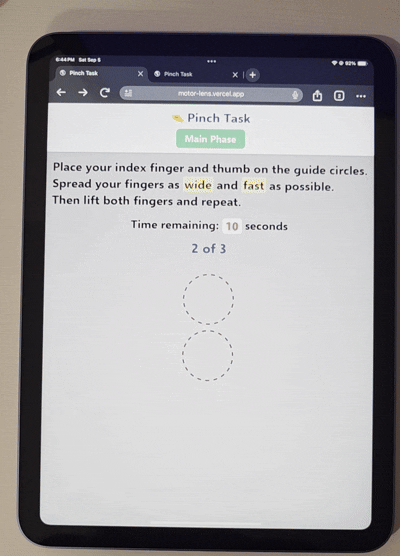

Place your index finger and thumb on the guide circles.Open them as widely and as quickly as possible.Then lift both fingers and repeat.
Time remaining: 10 seconds

Are you ready to try it yourself?
✅ Practice Complete